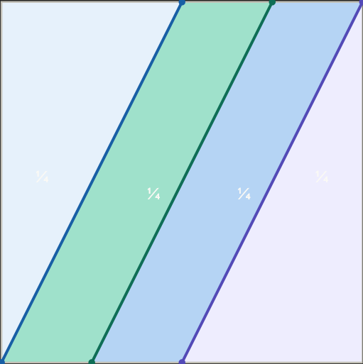

list of selected thoughts
A few days ago I saw two monarch butterflies. Orange wings slicing the orange sunlight.
Then I saw a groundhog sleeping in the lanky melting shadow of a sign. Drooling maggots out of its mouth. A torrent of maggots. Have a good night.
I ran.
In my eyes, large language models cannot satisfy this prompt. As of July 2026, they usually answer with some trivia, perhaps about ocean creatures, or a cliché short story opening.
In the space of all written texts meant for casual human consumption, these categories are well represented by novels and children's books. It is not impossible to find eerily similar texts in your local library; in fact I dare say it is overwhelmingly likely that you will.
How to surprise me… Strange question, as the act of thinking about the answer undermines the validity of the answer itself.
Lemme surprise you. You lost the game
Okay. Suppose you are a random healthy adult human alive today, May 13th, 2026, and living somewhere in the Western world (RHAHATLSWW). With no warning, you suddenly find yourself exactly 20 years in the past. Your only available posessions are what you carried on you before being suddenly transported. You must prove, as fast as possible, that you are from the future. How do you go about this task?
This question is from a recent episode of "The Rest is Science", where it is baptized as "the Time Traveler's Credibility problem".
For an adopted strategy to be considered effective, it must satisfy certain constraints:
On the podcast, Michael proposes a wristband on which are inscribed the locations of things that were considered lost for a period of time in the past. Imagine a Special Relic, which was lost in 2005 and found in 2007. In 2006, people did not know that Special Relic would be found the next year. By pinpointing its exact location, you might convince many that you indeed are a time traveler.
Stated as is, this strategy fails miserably (sorry Michael!). Clearly, obtaining the wristband is preparation, so spontaneity is violated. Satisfaction of the convincingness criteria is shaky: what if you hid Special Relic in 2005?, Special Relic is clearly a rediscoverable relic as it was found in 2007 in your timeline, how do you distinguish yourself from a genuine rediscovery?, what if people didn't know/care about Special Relic?, etc.
A clear pattern emerges from these questions if we want to mend Michael's strategy: careful selection of Special Relic is required. Michael proposes several ideas for possible Special Relics in the podcast: undiscovered oil deposits, lost shipwrecks, etc.
However, it seems we now violate Universality: the location of such specific Special Relics are generally not common knowledge.
I prompted some AIs about this, and they returned various idea of varying quality.
RHAHATLSWWs typically carry cell phones, which are pretty recent technology. The IPhone didn't come out until 2007, smartphones with large glass screens were unheard of in 2006. Simply presenting your cell phone might be proof enough.
Might. Perhaps people would believe you had access to secret military technology. Perhaps you would get kidnapped by big brother before convincing many people of your time travel adventure.
Your genetic composition is unique, so genetic sequencing provides an interesting avenue. If your real age gap with your parents is ~30 years or less, and you traveled back in time 20 years, the effective age gap would be absurdly short, thus proving you are a time traveler. Surely nobody could manufacture such sophisticated evidence in 2006, right? Surely tools of genetic modificaiton were not sophisticated enough yet, right?
This is the downfall of the genetic sequencing strategy. Individual genetic sequencing was not a feasible option 20 years ago, costing much more than a RHAHATLSWW could afford. For context, the Human Genome project, which mapped out all the genes of a human organism, was declared complete only in 2003.
I am aware that paternity/maternity tests existed back then, though. Genetic sequencing is not necessary. So this solution is not so bad actually. I suppose there would still be the hurdle of convincing your past parents that you are their son so that they would go get the testing done.
Another solution is predicting various extremely specific random events, such as the results of a lottery or some sports matches. Again, many of the questions that pop up with selection of Special Relic in Michael's strategy com up. Careful selection is required, except the "specific random event" category is much broader than "things that were lost to humanity sometime before may 13th, 2006 then found at some later date" so this strategy is much more tractable. Here are some events that might be common knowledge to a RHAHATLSWW: COVID-19, the 2008 financial crisis, invention of Bitcoin along with some price points, etc. The events chosen should also be relatively unlikely: predicting a singular event (like a singular election in some undecided region) that had a 50% chance of happening is not so impressive.
There are still problems with this approach: the mere fact of making such a prediction could have an effect on how events actually unfold: telling people of an impending financial crisis might have unforeseen consequences, causing the crash to happen earlier than you anticipated, for example. See "Butterfly effect".
Using events such as COVID also is not very efficient, since this prediction isn't verifiable until 2019...
I would counter the Butterfly effect problem by writing all my predictions in a publicly viewable scealed letter. This guarantees to observers that I made a prediction, without anyone knowing what the prediction was until after the event has occured.
Anyhow, this has been a lot of yapping about the how. One must also consider the why. Why the hell would you want to convince everyone you are a time traveler? Up to you.
.secnatsmucric tsom ni eoD nhoJ egareva eht yb deveihca eb dluoc staef laivirt non tey sseltniop hcus taht nevig ,gnihton naht erom tol a s'ti tuB .tcefrep t'nsi ti ,detnarG .erutcurtsarfni ruo ezinagro ot nesohc evah ew woh ot nwod yaw eht lla ,rehto hcae rof erac ot eganam snamuh woh rof esiarp si siht yaw a nI
!esrever ni ylpmis ,flah tsrif eht fo sdohtem eht sa emas era yeht ecnis yenruoj eht fo flah dnoces eht rof tropsnart fo sdohtem eht ebircsed ot deen on si erehT .aday aday aday ,sesacriats suoirav sdrawot ediug taht sgniliar eb dluow ereht ebyam ro ;elpoep deriapmi yllausiv ediug ot sgnikram dnuorg dessobme eb thgim erehT .ysae si niart eht ot gnitagivan ,noitats niart a ta sevirra sub eht ecno ,wohynA .tey denethgilne neeb t'nevah ylraelc elpoep hcus tub ,emos elzzup thgim tiag egnarts ym ,noihsaf edargorter ni gniztlaw llits ,sub eht no gnippoh retfA .)llew ho ,snoitcesretni ta knoh dluow srac wef a ebyam ,yako...( sklawedis ot sknaht regnad ro elcatsbo tuohtiw pots sub a ot A morf sdrawkcab klaw nac I .aera nabru egral yltneced emos ni snoitacol htob ,B ot A morf gniog ma I esoppuS
.ylsuoireS
?ytilibaborp hgih ylriaf htiw tcatni evirra dna ,detnaw uoy noitanitsed revetahw sdrawot noihsaf esrever ni ydob ruoy ecalpsid ot esoohc dluoc )ytic efas dna deniatniam llew ylbanosaer a ni evil uoy gnimussa( uoy ,namuh a sa taht gnizama ti t'nsI
.noitanalpxe hguone doog a ylbaborp saw taht ,smret elpmis dna lareneg ni tsael tA
.staerht eseht ees t'ndluow lamina eht snaem sdrawkcab gnivom os ,tnorf eht sdrawot tniop yllacipyt seyE ?dniheb regnad ro elcatsbo tnacifingis a saw ereht fi tahW .os od ot esnes hcum ekam t'ndluow tI .kniht I ,noitom fo noitcerid lausu rieht ot tcepser htiw sdrawkcab evom ot esoohc ton od yllacipyt slamina tsoM
I'll keep it simple.
We have been hearing about how AI models are rapidly improving and so on. Blablabla IMO gold last year by Google's model; people are expecting that some AI model will score perfectly at IMO 2026.
So are humans getting beaten at their own little math games yet? When will they get beaten? Are we obsolete?
As one of many humans playing these little math games I have a strange (and maybe baseless but I would like to think about it more) worry that my playing is obsolete, that I am going to get beaten by AI and all these puzzles won't be worth solving anymore.
But that's not the point of this entry.
AI models available to the average Joe aren't better then me (yet)! I solved a problem that Claude failed to solve completely
Here is the problem statement:
We want to divide a square with a side of 1 dm into 4 parts of equal area using three segments of the same length. These three segments must pass entirely through the square and must not intersect each other, except possibly at their endpoints. The segments are entirely contained within the square. What is the maximum length, in dm, of one of these three segments?
source: AQJM 2025-2026 semi final #16
It isn't too hard to come up with a good guess. But then you don't have the certainty that you have the optimal solution. Indeed, the harder part is the proof of optimality.
If you want to give it a try, stop reading.
.
.
.
.
.

The answer is 0.5sqrt5 dm. In the picture, the bases of the three parallel lines are spaced by 1/4 dm from one another.
Here is the proof:
Suppose the optimal solution has a triangle. Then since the area is xy/2=1/4 (x, y on consecutive sides of the square) you want to maximize x^2+y^2. However x and y are both between 0 and 1. You can view this as maximizing the distance from the origin to a point of the curve xy=1/2 that is contained inside the square of sidelength 1 with its bottom left corner at the origin. It is easy to see that the maximum length is achieved from the origin to the intersection of the hyperbola with the edge of the square. This gives a distance of 0.5sqrt5.
Suppose the optimal solution has no triangle. This means that no line is on two consecutive sides of the square. This means that there must be at least one trapezoid with two consecutive right angles formed by one of the cuts (C). If the length of C is bigger than 0.5sqrt5 then since the height of the trapezoid is 1 this means the difference between bases lengths has to be more than 1/2.
If the difference between base lengths is more than 1/2 then the area of the trapezoid is more than 1/4 which is a contradiction
Claude found the construction (the image is generated by Claude actually), but the thought process was somewhat lacking.
Having plugged in the question, it timed out 3 times, and after I told it to just give me an answer it essentially assumed that the solution had three parallel lines, (legitimately) saying that the construction it found was optimal under that assumption.
However, it just kind of handwaived from there: it only said "you could show that if the lines aren't parallel you do worse", without actually proving its claim.
A definition: something is beautiful iff it makes you want to pay attention to it.
Gazing at landscapes, architecture, someone beautiful: you want to keep looking.
Is a car crash beautiful? Maybe. You might be compelled to watch, but you might not want to spend time discussing it.
Social media etc. are not necessarily beautiful: they are addictive. I don't believe you always consciously decide to doomscroll.
By this definition beauty intrinsically requires an active process.
It also requires the presence of free will.
«Beauty is in the eye of the beholder»
Travail complété dans le cadre d'un cours de littérature; texte inspiré de et faisant suite à Perte et récupération du cheveu (Julio Cortazar)
«Si après l'introduction de l'excellent jeu du cheveu, vous réalisez que vous cherchiez non pas un jeu inutile, mais plutôt une activité inutilement utile, la présente publication aura trouvé le parfait destinataire.
Il faudra d'abord sélectionner son compte informatique le plus important: courriel, compte de banque, portail étudiant ou professionnel, assurances, réseaux sociaux, etc. Ensuite, il faut donner son nom d'utilisateur et son mot de passe à quelqu'un au choix: pour une partie rapide et facile, choisissez un ami proche; pour une partie de difficulté intermédiaire, un collègue conviendra; si vous souhaitez tenter votre chance, parlez au premier passant au coin de la rue, et si vous avez vraiment du temps (et une santé mentale) à perdre, prenez contact avec un ancien amant. La partie commence officiellement une fois que la personne choisie, que nous nommerons le "maître du jeu", annonce la modification du mot de passe.
Quelques essais initiaux valent la peine d'être entrés sans trop de méditation: "bonjour123", "11111111", "asdfghjkl", la date d'anniversaire ou le nom du chien du maître du jeu, etc. Il ne serait pas mal avisé d'enquêter un peu, question de se renseigner au sujet des informations personnelles du maître du jeu qui pourraient aider à trouver le fameux mot de passe.
Si ces recherches se révèlent infructueuses, et que le mot de passe n'est toujours pas deviné, il serait temps de considérer une approche plus systématique: procurez-vous une douzaine de dictionnaires en langues diverses (français, anglais, portugais, swahili, latin, qu'importe!) et entrez un par un les mots qui s'y trouvent.
Il est certes possible qu'après quelques dizaines d'heures, l'irritation croissante de ne plus pouvoir accéder à vos courriels vous mène à chercher des moyens plus efficaces de taper tous ces mots. Certaines alternatives se présentent: vous pourriez apprendre à programmer, écrire un "script" pour entrer automatiquement des milliers d'essais par seconde, puis attendre. Vous pourriez embaucher une équipe de typographes et décupler avec peu d'efforts le débit d'essais. Vous pourriez même pirater les ordinateurs du maître du jeu, et entrer ses mots de passe en espérant que l'un d'entre eux corresponde à celui que vous cherchez, mais il ne faut surtout, surtout pas lui demander de révéler la réponse ni même de dévoiler des indices, puisque cela équivaut à déclarer forfait au jeu.
Dans l'éventuel cas, cher joueur dédié, où vous n'auriez toujours pas saisi la réponse, il serait facile de penser que vous êtes, pour ainsi dire, "dans la merde". L'important est toutefois de garder son sang-froid: contactez selon le cas la banque, l'employeur, l'institution, et expliquez franchement votre situation. Bien que le maître ne puisse pas vous guider dans la quête, ces acteurs tiers le peuvent, s'ils le souhaitent. Avec suffisamment de supplications, d'implorations, de sérénades, vous parviendrez sans doute à les convaincre de vous accompagner vers la fin de votre longue quête.
Il s'avère néanmoins que dans certains systèmes informatiques bien conçus, bien sécurisés, toute donnée personnelle est soumise à un cryptage ou deux. Bref, au sein des entrepôts de données numériques se trouvent des tas de symboles inintelligibles, parmi lesquels aucun ne correspond à votre mot de passe. Dans ce cas, il va sans dire que les acteurs tierces invoqués plus tôt ne vous seraient d'aucune aide et que votre quête serait encore dans sa plus tendre enfance.
Vos recours seraient alors limités. La plus prometteuse approche serait la suivante: obtenez un doctorat en physique des matériaux, gravissez les échelons à NVIDIA ou autre géant de la technologie informatique, et redirigez l'équivalent du PIB de la Bulgarie vers la mise au point d'un ordinateur quantique capable de résoudre, de démystifier le secret des nombres premiers et ainsi de casser le cryptosystème RSA. Et s'il s'avère qu'un cryptosystème postquantique avait été utilisé, retenez encore votre désespoir pour quelques années, envahissez les universités du monde entier à la recherche de talents qui pourront vous proposer des ordinateurs aux architectures toujours plus puissantes, plus performantes, plus rapides; ignorez les problèmes politiques, sociaux, éthiques engendrés par ces féroces bêtes à calcul, poussez toujours plus loin vos précieux ingénieurs, et ne cessez jamais votre recherche car il ne faut surtout pas que votre pire crainte se réalise: vous pleurez seul(e) dans la noirceur de vos draps, terrifié(e), paralysé(e), étranglé(e) par l'impossibilité d'accéder à ce foutu compte informatique qui vous tenait jadis informé à longueur de journée à propos de l'état de votre portfolio, des dernières vacances de l'ami de votre cousin, ou de votre note en littérature...»
Goal: be able to encrypt messages without needing to share private keys
Conventional symmetric encryption works like normal locks: you use the same key to open and close (encrypt/decrypt) a box (a message). This is a problem if you want to communicate with someone but cannot be sure that you have a safe way to send them the key which will decrypt your text. Asymmetric encryption schemes, like the RSA encryption scheme, work differently: instead of sharing the keys to one model of locks, you send everyone open locks only you can unlock. As such, anyone can encrypt a message they want to send you by putting a message in the box then closing the lock, and only you, as the owner of the key, can decrypt it.
The math behind RSA
Suppose you are the sender (Alice).
Message transmission:
Thus n and e consitute the public key, which allow anyone to put a Alice's lock on the messages people want to send her, whereas d is Alice's private key which allows only her to decrypt the messages.
Wait, isn't exponentiating numbers like that really hard? After all, the numbers get huge super quick, no? No, you reduce mod n (=looking only at the remainder when dividing by n) which allows the computation to stay manageable
Flaws
Goal: in a situation where x is Alice's secret and y is Bob's secret, compute f(x,y)=z and publish z without revealing x nor y to anyone else
Of course, knowledge of z often implies certain constraints on the unknown values. For example, if f(x,y)=max(x,y), then one of the values would be revealed anyways; if f(x,y) is defined as 1 when x>y and 0 otherwise, then the output would allow Alice and Bob to write an inequality about the other person's value (this particular case of two party computation is known as Yao's millionaires' problem). Two party computation only guarantees that the computation can be done on x and y without needing to reveal x or y. Here is the procedure as I understand it:
This procedure satisfies the requirements: Bob cannot learn Alice's secret, since a) she only sends an encrypted version of her input and b) Bob cannot reverse engineer Alice's secret by poking around the circuit, since it is garbled. Furthermore, Alice does not learn Bob's secret because of the oblivious transfer. Finally, the output computed is indeed correct as the garbled circuit computes the same thing as a regular circuit.
garbled circuits
Garbled circuits are circuits made of garbled gates.
garbled gates
The truth table for a regular logic gate is something like this:
Here is how to garble this gate, from Alice's point of view:
To an outsider, the gate means nothing. Alice can completely control which inputs Bob is allowed to plug into the circuit, by disclosing the corresponding strings for the input: a_0 or a_1; b_0 or b_1.
Here is how Bob would evaluate the output of the gate given certain inputs:
Bob now knows his output string. Importantly, he was unable to figure out what the strings for a_1 (ribbon) and b_1 (snake) are, since the input columns contain only hashes which give no information about a_1 and b_1. As a result, he is also unable to distinguish between each of the other input rows (he does not know which is a_0b_1, which is a1_b0 and which is a1_b1). Equally importantly, he also doesn't know what the outputs to the other input rows are either, since they are encrypted with a password he does not know. Finally, he does not know what bit his output string corresponds to either, and this is really important because it means he can now continue to evaluate other garbled gates in the circuit without additional knowledge of the gates of the circuit.
At this point, Bob is good to go: he can continue to evaluate each logic gate until the last one, which will give him the output of the computation. As mentionned previously, the output gates could be special, having no encryption on the output column, or Alice could simply send what bit each output string corresponds to. To convince yourself that the garbled circuit does not reveal any information about Alice's input, you could have the following thought experiment: Alice could have chosen a different input, but switched a whole bunch of the labels in the garbled circuit in a way that makes the evaluation process look identical to Bob. This is possible since each string is chosen arbitrarily. Therefore, Bob would not be able to distinguish between these two inputs, so Alice's input is safe from his grubby hands.
But wait, how does Bob get the strings corresponding to each bit of his initial input without revealing his input to Alice??
Oblivious transfers
Alice wants to communicate the string corresponding to Bob's input bit without Bob knowing the string corresponding to the opposite input bit and without her knowing which string she sent to Bob. A metaphor with a locked box works well here.
Bob does not learn the other string, and Alice does not know which string he has learned, so our goal of an oblivious transfer has been achieved
Concretely, this can be implemented by various cryptographic schemes. What is important is that the encryption and decryption processes must be commutative, i.e. if Alice encrypts the message then Bob encrypts the message, the resulting ciphertext can be decrypted both if Alice decrypts then Bob decrypts or if Bob decrypts then Alice decrypts.
A final note for this section: this is a 1-of-2 oblivious transfer. It is pretty trivial to extend this to 1-of-n oblivious transfers (just send multiple boxes). Also, various protocols exist which do not require 3 back and forth messages.
Flaws
related
I think you could directly expand this to multi-party computation. Suppose you want to evaluate f(x_1, x_2, x_3, ..., x_n). Alice plays the same role, garbling the circuit, then communicates via oblivious transfers Bob's input strings. Bob can broadcast which hashes in the input gate he selects. This does not reveal his inputs, since you can't go backwards from the hashes. Charlie does the same, etc. until the last person who can now evaluate the entire circuit. The hashes do not reveal what the underlying inputs are, so we are good here. This implementation would still be subject to the flaws of garbled circuits though, and it seems that most implementations of multi-party computation do not adopt this approach, though I haven't read much into it.
further reading: Programmable Cryptography, Garbled circuits, Multi-party computation